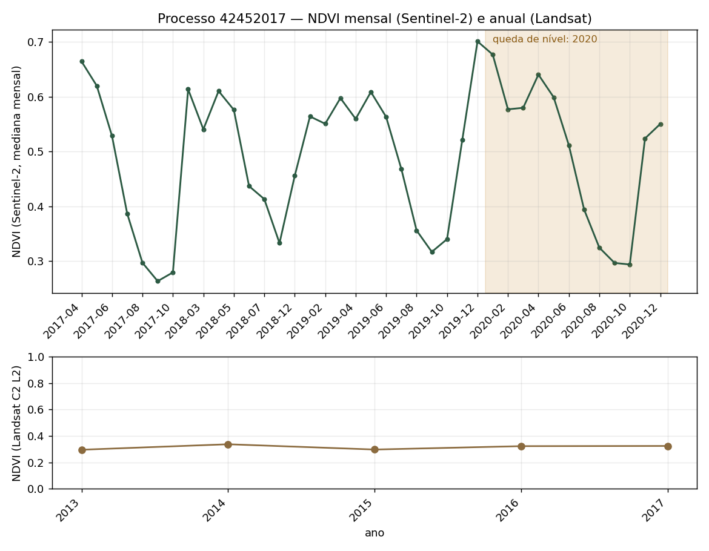

Relendo o pedido dela, linha por linha
Sete requisitos, cinco atendidos, dois não. E duas confusões minhas que a releitura expôs.
| Requisito (palavras dela) | O que existe | Veredito |
|---|---|---|
| “alguma ferramenta” | 4 scripts de linha de comando, testados | 🟡 parcial — é pipeline, não ferramenta |
| “úteis no meu dia a dia no trabalho” | nada: os scripts servem ao pré-projeto, não à rotina dela | 🔴 não atendido |
| 1. Cruzar Atlas × licenciamento e supressão | agora sim, mas só por amostragem de pontos no WMS (86,7% de acerto) | 🟡 entregue com viés declarado |
| 2. Área e taxa de avanço por classe do Atlas | taxa por classe existe, denominador aproximado | 🟡 parcial |
| 3. Landsat/Sentinel-2 + MapBiomas: suprimiu? quando? | sim — e agora com data mensal e as imagens | 🟢 atendido |
| 4. Proporcionalidade por formação | saí da mesma tabela, com n pequeno | 🟡 parcial |
| “concretas e testadas” + aviso de custo | executado, com contagem de chamadas e de bytes | 🟢 atendido |
1. Eu usei MapBiomas no lugar do Atlas e apresentei isso como se o item 1 estivesse resolvido. Não estava: o cruzamento com o Atlas só existiu agora, e ainda é amostral.
2. Eu reportei taxa de supressão como se fosse taxa de avanço do licenciamento. Avanço = área licenciada ÷ remanescente. Supressão = área suprimida ÷ área licenciada. São os itens 2 e 3, e eu os tratei como um só.
O que mudou nesta rodada
Item 3, com data no mês

Floresta densa até 2019 (NDVI 0,76–0,81). Queda entre janeiro e março de 2020 (0,79 → 0,35) e nível baixo até 2021. O MapBiomas anual só diria “2020” — o mensal diz o mês. Em 2022 o NDVI sobe de novo: vegetação que rebrota não é a mesma coisa que uso do solo que não voltou.
Caso negativo: já estava degradado

Landsat 2013–2017 plano em 0,30–0,34 e NDVI mensal sem queda: a área já era pastagem degradada antes da licença. Aqui é o Landsat que segura a linha do tempo — o Sentinel-2 só começa em março de 2017.
As imagens que ela queria


2019 (antes) e 2020 (depois). O contorno vermelho é a ASV. Sai direto do Earth Engine, sem baixar nada: getThumbURL.
O Atlas, examinado de perto (o que mudou na conclusão da seção 6)
- WFS desligado no servidor:
the service parameter "wfs" is invalid. Não há download vetorial por nenhuma via (nem/wfs, nem/geoserver, nem/ows). - Mas o WMS é vetorial, e o
GetFeatureInfodevolve o fragmento:CLASSES(FLORESTAL SECA, SAVANA ÚMIDA, CAMPO ÚMIDO…),AREA_KM2, município, região hidrográfica. É dado de verdade, consultável. - Só por ponto, e com 13% de erro: em 60 pontos checados contra render local em alta resolução, a concordância foi 86,7% (7 fragmentos perdidos, 1 inventado). Erro de borda e de resolução.
- O render é gradiente dependente de escala: 21.582 cores distintas num mosaico de 4 milhões de pixels, e a mesma mancha sai com cor diferente em 200 px e em 800 px. Não há paleta discreta — estatística zonal por classe não sai da imagem. E a legenda (
GetLegendGraphic) responde 500. - Cobertura: só as bacias do Meia Ponte e dos Bois.
Cruzamento por amostragem (30 ASVs, 425 pontos no WMS): 86,9% da área autorizada está fora dos remanescentes mapeados; onde há remanescente, FLORESTAL SECA 118,7 ha (9,8%) e SAVANA SECA 37,4 ha (3,1%). Parte desse “fora” é fora das bacias mapeadas — o viés está declarado, não escondido.
Bugs novos desta rodada (todos silenciosos, de novo)
- Sazonal confundido com evento. O “maior queda mensal” do NDVI era a queda de estação seca, não a supressão. A correção foi comparar a média anual de um ano com a do anterior — só aí o salto de 0,76 → 0,42 aparece.
- Ano de conversão sem máscara. O detector pegava a primeira conversão de qualquer época; para uma licença de 2019 o “ano” saía 1996, e as imagens pedidas eram de um ano sem Sentinel-2.
- Janela do GetFeatureInfo. Uma janela de 45 m erra na borda do fragmento; 600 m acerta, mas pode pegar o vizinho. Sem teste de concordância, o erro entra silencioso na área.
- Cor como classe. Assumi que a cor do render era a classe do Atlas. Não é: o estilo é gradiente. A tentativa de mapear cor→classe por k-means foi abandonada — e é a melhor prova de que a estatística por classe exige o shapefile.
- 2.012 pixels por mosaico. Uma linha de base errada de 10× (fator de hectares) só apareceu porque a área do bbox foi conferida contra o valor em km².